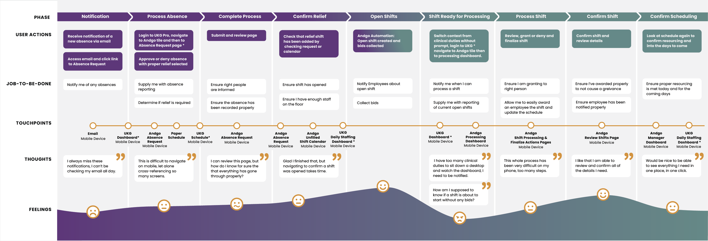
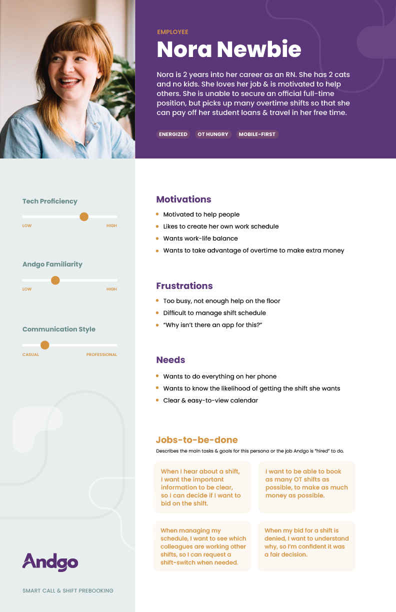

When I joined Andgo, product decisions relied almost entirely on sales input, with no formal user research and no defined personas in place. Without a clear understanding of who we were building for, the team defaulted to self-referential design, which resulted in a clunky experience for customers. My first initiative was to lead Andgo's first user research effort and develop personas the team could reference to support faster, better-informed product decisions.
I partnered with the Customer Experience team to identify and reach interview candidates, sourcing deliberately across a range of customer sizes and locations to ensure the patterns I found were representative rather than anecdotal. I conducted approximately 20 one-on-one interviews, roughly three to four per profile, to understand users' day-to-day workflows and where Andgo was succeeding or falling short.

The interviews resulted in six personas, each defined by profile type. After validating the personas, I presented them to leadership and then to the wider company, giving the team a shared, evidence-based reference for product decisions in place of assumptions.
The response to the personas was strong enough that user research became a standing practice at Andgo, which led me to establish a formal research program, Andgo Research Labs. Aside from now having a guiding voice from users, two major changes followed immediately from the findings, a shift toward mobile-responsive design to support managers working on the go, and a revision of in-product content to reduce technical and medical jargon, making key actions easier for newer nurses to understand.